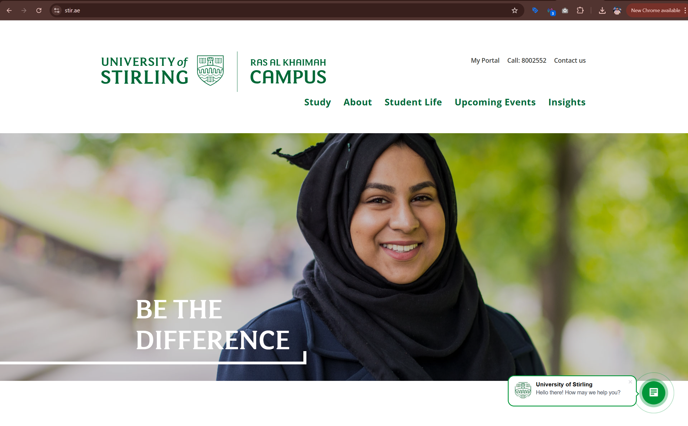
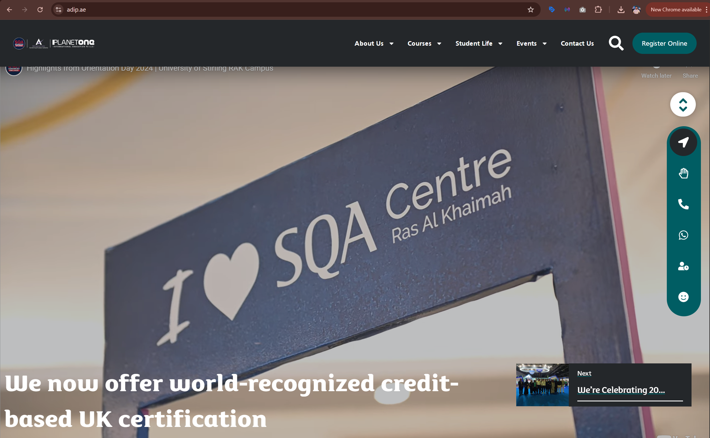

University of Stirling - UAE Campus
Driving enrollment growth through full-stack digital marketing.
As Digital Marketing Manager for the University of Stirling’s UAE campus, I planned and executed digital marketing across paid media, social platforms, email, events, and website improvements to attract prospective students and drive applications. I handled the full digital marketing function for the campus, producing creative assets, running lead generation campaigns, organizing online workshops, and improving the university’s website experience to support enrollment growth.
International university branch
University of Stirling’s Ras Al Khaimah campus recruiting students in the UAE.
Paid media, email, social
Campaigns across Meta Ads, Google Ads, email marketing, SMS, and organic social media.
Creative production
Produced digital flyers, video content, social posts, newsletters, and event materials.
Lead generation
Attract prospective students and convert inquiries into applications.
Building momentum for digital student recruitment
The university already had a website and social media presence when I joined. Paid campaigns were not running, content lacked momentum, and social engagement was limited. The marketing setup needed stronger creative output, clearer messaging, and more consistent lead generation activity.
Managing the full digital marketing function
I handled campaign strategy, content creation, creative design, email marketing, event promotion, and performance reporting for the university’s UAE campus while reporting directly to the COO.
Paid advertising
- Ran Meta lead generation campaigns targeting prospective students
- Managed Google Ads search campaigns
- Optimized campaigns to improve cost per lead
- Generated inquiries for undergraduate and postgraduate programs
Content and social media
- Created engaging social media content including videos and graphics
- Produced event coverage through photography and video
- Published student-focused content to improve engagement
- Built stronger activity across the university’s social channels
Email and newsletters
- Designed monthly and quarterly newsletters
- Created email campaigns promoting programs and events
- Segmented communication for prospective students
- Used email marketing to nurture leads
Website improvements
- Improved UX and content structure of the university website
- Updated landing pages and program information
- Ensured lead capture forms worked smoothly
- Maintained the website for content updates
Online workshops and events
- Organized online information sessions for prospective students
- Set up and managed Zoom workshops
- Promoted events through digital campaigns
- Ensured smooth execution of virtual recruitment sessions
Additional project - SQA Institute
- Built the website for the SQA training institute
- Ran digital campaigns promoting SQA courses
- Generated leads for both university and institute programs
- Supported the institute’s digital presence alongside the campus
Growth in audience, leads, and engagement
Social media growth
Instagram followers increased by over 600%, with Facebook and LinkedIn audiences also growing significantly through consistent content and campaign activity.
Lead generation campaigns
Paid campaigns generated steady inquiries from prospective students, contributing to applications and enrollments across multiple programs.
High performing email marketing
Designed and executed email campaigns and newsletters that achieved strong open and click-through engagement.
Improved digital reach and student inquiries
The overall result was a more active, better organized digital marketing setup that improved visibility, strengthened engagement, and supported student acquisition efforts.
Consistent student lead generation
Paid campaigns generated steady inquiries from prospective students interested in university programs.
Stronger social engagement
New content formats and videos increased interaction across the university’s social media channels.
Expanded marketing assets
Developed a large library of marketing materials including videos, flyers, newsletters, and campaign creatives.
Website platforms and marketing assets

University of Stirling UAE website
Main website used to capture student inquiries and support program discovery.

SQA institute website
Website built to promote SQA programs and generate leads for the institute.
Social media campaign examples
Examples of organic social content created to increase engagement and interest among prospective students.
What this project says about how I work
- I can manage the full digital marketing function for an education-focused business across campaigns, content, website, and communications.
- I combine performance marketing with creative production, event support, and day-to-day execution.
- I am comfortable building momentum where digital activity exists but lacks consistency, structure, and stronger creative direction.
- I connect lead generation, brand communication, and user experience into one working marketing system.
Want to see another project?
The next case study moves into consulting, SEO oversight, website improvements, and stakeholder coordination in the healthcare space.